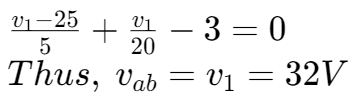
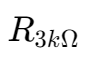
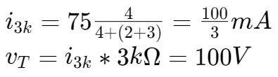
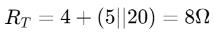

戴维宁和诺顿定理 | Thevenin / Norton Equivalent Circuits
Thevenin’s theorem
以一个电压源和一个电阻来等效一个具有两个端口的电路。

计算等效电压
计算等效电压即计算电路中两端点间的电压
例题1

等效电压即 vab。
通过使用节点分析法，

例题2

对于此题，我们可以忽略两端点，然后计算电阻  两端的电压。

计算等效电阻
去除电路中所有的电流源和电压源后，等效电阻 RT 就等于两端之间的电阻。
例题


则 
诺顿定理 | Norton Theorem
戴维宁定理把电路简化成了一个电压源串联着一个电阻，而诺顿定理将电路简化为一个电流源并联着一个电阻，如图所示：

最大传递功率

对于如上图所示的电路，当负载 RL 与端阻 RT 相等时，传递功率最大。